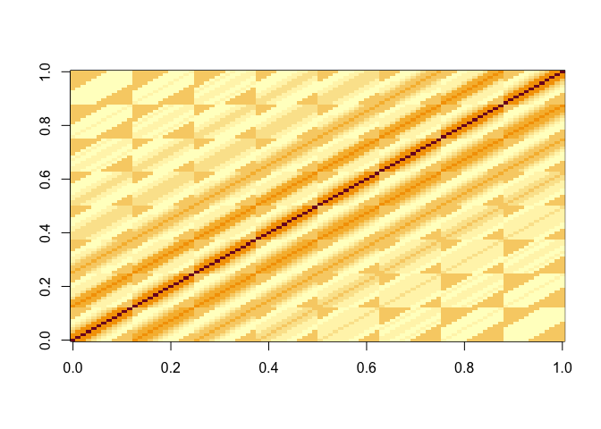
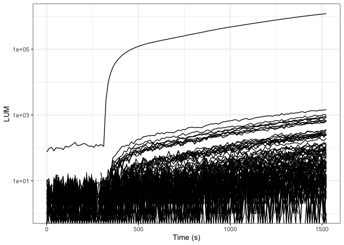
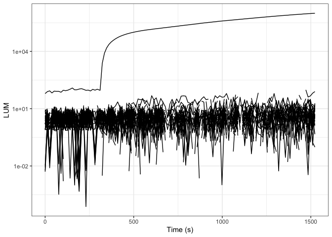
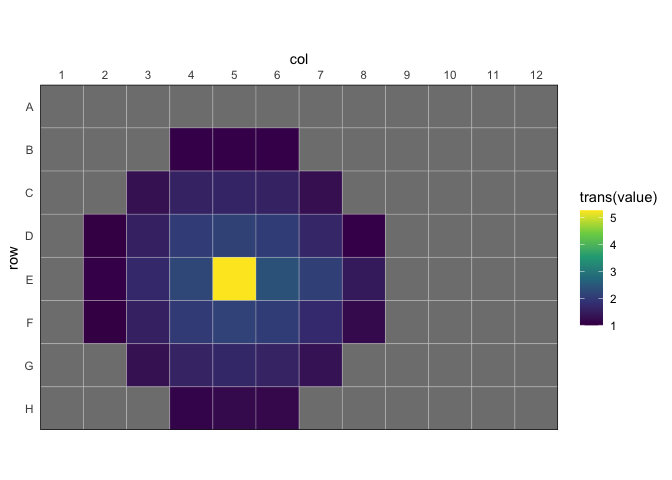
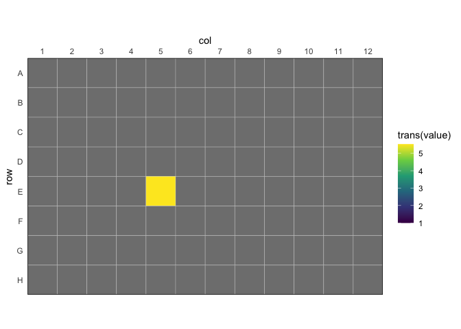

The goal of reluxr is to enable deconvolution of luminescencent plate-based experiments. The implementation is based on the MatLab implementation from the paper titled 1Deconvolution of Luminescence Cross-Talk in High-Throughput Gene Expression Profiling’ Mauri, Vecchione, and Fritz (2019)
Installation
You can install the development version of reluxr from GitHub with:
install.package("reluxr", repos = "https://bradyajohnston.r-universe.dev")Example
This is a basic example which shows you how to solve a common problem:
library(reluxr)
library(dplyr)
#>
#> Attaching package: 'dplyr'
#> The following objects are masked from 'package:stats':
#>
#> filter, lag
#> The following objects are masked from 'package:base':
#>
#> intersect, setdiff, setequal, union
library(ggplot2)
fl <- system.file(
"extdata",
"calibrate_tecan",
"calTecan1.xlsx",
package = "reluxr"
)Create a Deconvolution Matrix
dat <- plate_read_tecan(fl)
dat
#> # A tibble: 23,040 × 5
#> cycle_nr time_s signal well value
#> <dbl> <dbl> <chr> <chr> <dbl>
#> 1 1 0 OD600 A01 0.0450
#> 2 1 0 OD600 A02 0.0452
#> 3 1 0 OD600 A03 0.0453
#> 4 1 0 OD600 A04 0.0453
#> 5 1 0 OD600 A05 0.0453
#> 6 1 0 OD600 A06 0.0452
#> 7 1 0 OD600 A07 0.0458
#> 8 1 0 OD600 A08 0.0456
#> 9 1 0 OD600 A09 0.0455
#> 10 1 0 OD600 A10 0.0451
#> # … with 23,030 more rows
mat_d_best <- dat |>
filter(signal != "OD600") |>
filter(time_s > 500) |>
rl_calc_decon_matrix(value, time_s, ref_well = "E05", b_noise = 30)
image(log10(mat_d_best))
Plot the values.
rl_plot_time <- function(data, time, value, group = "well") {
data <- dplyr::mutate(
data,
time = {{ time }},
value = {{ value }},
group = {{ group }}
)
plt <- ggplot2::ggplot(
data,
mapping = ggplot2::aes(
x = time,
y = value,
group = group
)
) +
ggplot2::geom_line() +
ggplot2::scale_y_log10() +
ggplot2::theme_bw()
plt
}
dat |>
ungroup() |>
filter(signal == "LUMI") |>
rl_plot_time(time_s, value, well) +
labs(
x = "Time (s)",
y = "LUM"
)
#> Warning in self$trans$transform(x): NaNs produced
#> Warning: Transformation introduced infinite values in continuous y-axis
#> Warning: Removed 25 rows containing missing values (`geom_line()`).
dat |>
ungroup() |>
filter(signal == "LUMI") |>
rl_adjust_plate(value, mat_d_best, time = time_s) |>
rl_plot_time(time_s, value, well) +
labs(
x = "Time (s)",
y = "LUM"
)
#> Warning in self$trans$transform(x): NaNs produced
#> Warning: Transformation introduced infinite values in continuous y-axis
#> Warning: Removed 639 rows containing missing values (`geom_line()`).
fl <- system.file(
"extdata",
"calibrate_tecan",
"calTecan1.xlsx",
package = "reluxr"
)
dat <- plate_read_tecan(fl)
mat_d_best <- dat |>
filter(signal != "OD600") |>
filter(time_s > 500) |>
rl_calc_decon_matrix("value", "time_s", ref_well = "E05", b_noise = 30)
dat |>
ungroup() |>
summarise(value = mean(value), .by = well) |>
rl_plot_plate(value, trans = log10) +
scale_fill_viridis_c(
limits = c(1, NA)
)
#> Scale for fill is already present.
#> Adding another scale for fill, which will replace the existing scale.
dat |>
ungroup() |>
filter(signal == "LUMI") |>
rl_adjust_plate(value, mat_d_best, time = time_s) |>
summarise(value = mean(value), .by = well) |>
rl_plot_plate(value, trans = log10) +
scale_fill_viridis_c(
limits = c(1, NA)
)
#> Scale for fill is already present.
#> Adding another scale for fill, which will replace the existing scale.
#> Warning in FUN(X[[i]], ...): NaNs produced
Mauri, Marco, Stefano Vecchione, and Georg Fritz. 2019. “Deconvolution of Luminescence Cross-Talk in High-Throughput Gene Expression Profiling.” ACS Synthetic Biology 8 (6): 1361–70. https://doi.org/10.1021/acssynbio.9b00032.